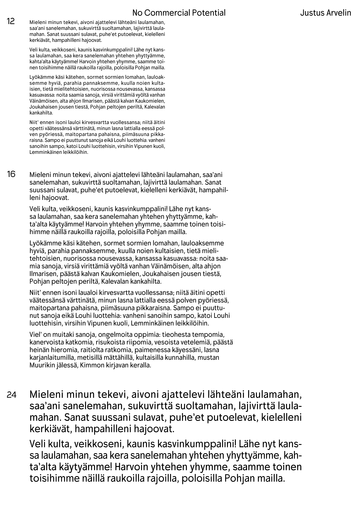
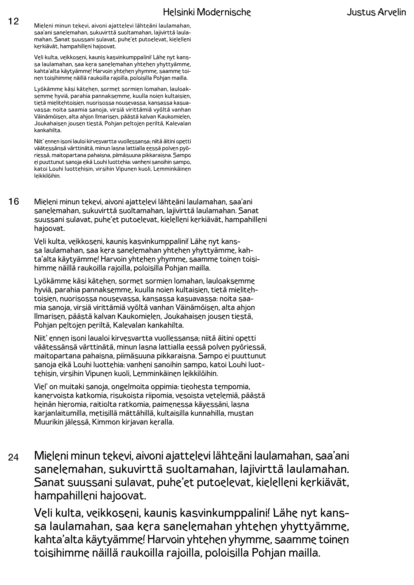
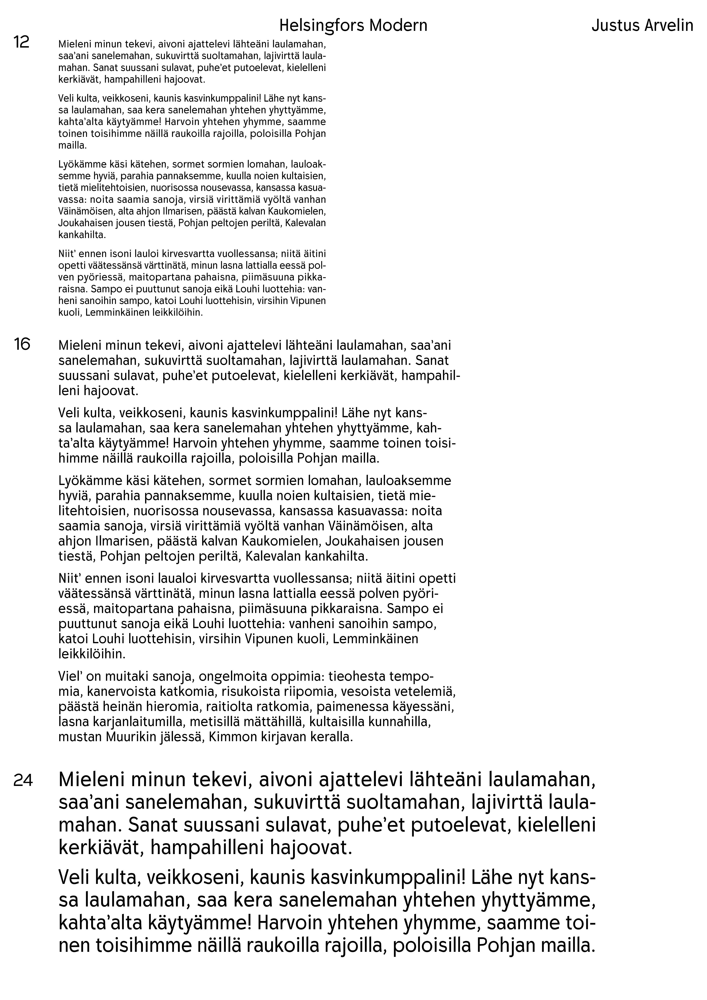
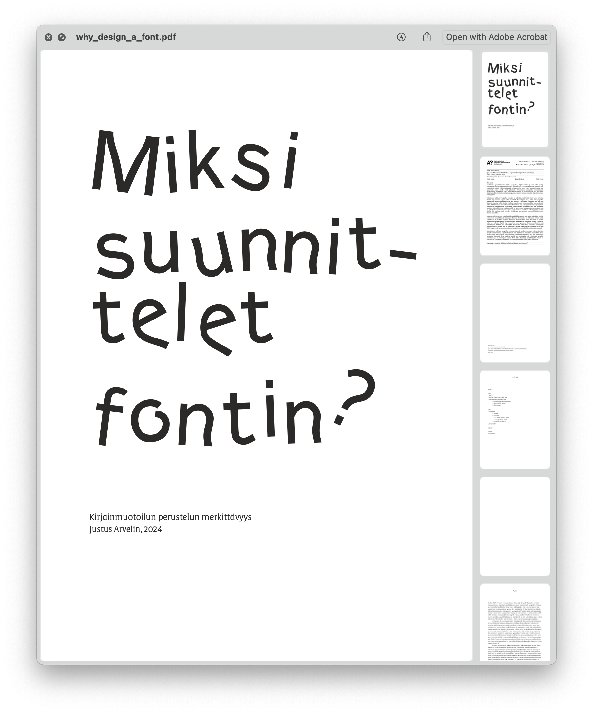

WHY DESIGN A FONT?
An overview of my typeface design project, which started in 2023, where I study the role of reasoning in type design and aim to design a font that is as relevant and useful as possible. Read through the latest updates here!
| Where are we at now? |
During the fall of 2024, I worked on a new type project for the For Type Lovers class at the New York School of Visual Arts. Although I tried to come up with a completely new idea for a typeface, I ended up designing another sans-serif font to be used in body copy. For me, there's something magical about designing a font to use as a basis for my design work, as I often start by choosing the typeface.
I named my typeface 'No Commercial Potential', because I probably won't be using it for commercial purposes for a while yet. It's not that it wouldn't work, but I feel like I'm still figuring out where I'm going with my type design projects. Something is definitely in the works, since I've been dabbling in type design for the last year now, and I've always ended up drawing similar kind of letters.
My aim has been to create a sans-serif typeface that goes beyond simple, pared-down design and works well in text while retaining an expressionistic look of its own. I feel that I have achieved this goal even better with the font 'No Commercial Potential'.
On this page, I present the three stages of my type project. The first one below is the most recent update and below that, in a smaller scale, are the first version from 23' and a sort of middle stage of the process that I did in during fall 24'. If you compare my latest work to my earlier work for my Bachelor's thesis in 2023, you will probably find many similarities.
| The latest and third version 'No Commercial Potential' |
|

|
| The first version 'Helsinki Modernische' (23') |
The second version 'Helsingfors Modern' (24') |
|

|

|
| My Bachelor's Thesis On The Topic (click to open) |
|  |
In my thesis I studied typography, type design and why fonts are designed and I also designed a typeface. The aim is not to find the perfect answer, but rather to present different solutions to justify the design of a new font, and questions to help make decisions. In addition to the importance of justifying design work, the thesis focuses on the vocabulary of typography and its dialect, as well as sans-serif typefaces. The output is a typeface based on an old, previously undigitised typeface.
The thesis explores different interpretations of typographic vocabulary, defines the meaning of the word font, discusses different ways of designing typefaces and how different typographers view typefaces today. However, the thesis does not discuss the practical needs for which fonts are still designed, such as communication, language preservation and accessibility, but focuses on answering the question from the designer's point of view. A look at the classification of typefaces and the challenges it poses shows that there is a need for a new classification system, while a look at the changing face of typography and its current state shows that design work today is very much screen-to-screen rather than on paper. The thesis also opens up the history of sans-serif typefaces.
The production is a typeface based on the old German typefaces Navarre, Washington and Columbus designed by Schelter & Giesecke. None of these three has ever been digitised. The production balances between its own interpretation and the preservation of the old, while focusing on creating something new rather than simply copying the old. The aim of the production is to find a way of designing that justifies the type design work, both for the designer himself and for the public. The end result is very much in line with the objectives of designing a typeface in a way that is informed and open. The justification for the work comes largely from the need to learn and create, but also from the need to preserve old typefaces.
The thesis explores typography, its transformation and in particular highlights the importance of transparency in design. The conclusion is that you can design typefaces for the joy of designing, but it is essential to be open about your design process, its background and intentions. This is an activity that promotes both typography and graphic design in general and is therefore very important. A more important measure of significance than the output of the work is the designer's ability to justify and verbalise the design process and its outcome.